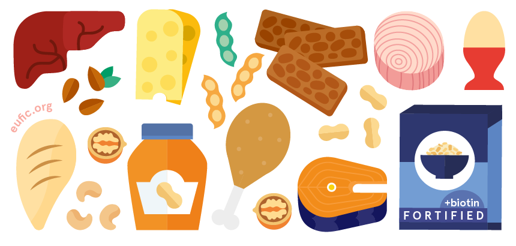
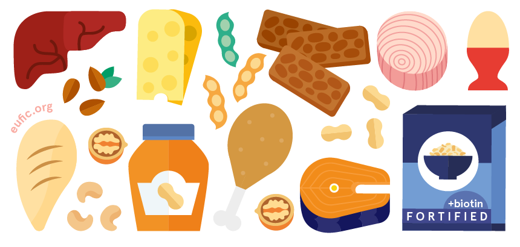

Přehled živin v našem jídelníčku
Makroživiny
Makroživiny tvoří většinu toho, co sníme. Jsou pro tělo zdrojem především energie. Mají však i další významné role ve výživě.
Sacharidy
Stavebními kameny sacharidů jsou cukerné jednotky, které se spojují do řetězců. Podle délky vytvořeného řetězce se sacharidy dělí na cukry, oligosacharidy a polysacharidy. Na etiketách potravin proto najdete „sacharidy / z toho cukry“. Gramáž uvedená na etiketě vedle:
- „sacharidy“ udává celkové množství sacharidů (tzn. jednoduché cukry a také komplexní oligosacharidy a polysacharidy)
- „z toho cukry“ pak udává množství sladkých, jednoduchých cukrů z celkového množství sacharidů.
Je důležité tyto typy rozlišovat, protože díky svým odlišným vlastnostem poskytují energii různým způsobem. Ještě důležitější je rozlišovat sacharidy pro naše tělo stravitelné a nestravitelné. Stravitelné sacharidy jsou primárním zdrojem energie pro naše tělo, zatímco ty nestravitelné specificky vyživují naši střevní mikrobiotu.
Střevní mikrobiota jsou kolonie mikroorganismů přirozeně se vyskytující v našich střevech. Hrají klíčovou roli při trávení potravy a udržení kondice našeho trávícího traktu. Tyto mikroorganismy dokonce produkují některé vitaminy a mají vliv na naši psychiku. Každý máme ve střevech své mikroorganismy a každý je potřebujeme. Složení střevní mikrobioty je natolik unikátní pro každého z nás, že by se dalo přirovnat k otisku prstu.
Stravitelné
Cukry
Cukry jsou sacharidy o délce 1-2 cukerné jednotky. Nejsnáze se štěpí a poskytují tak tělu rychlý zdroj energie. To se vyznačuje prudkým zvýšením hladiny krevního cukru. Nevýhodou je, že po prudkém zvýšení přichází hluboký pokles, který může vést k pocitu únavy. Rychlý zdroj energie se hodí po velké zátěži organismu, jako je například sport nebo fyzická práce. Při každodenních činnostech a v průběhu dne je však žádoucí spíše udržovat hladinu krevního cukru stálou.
Cukry jsou nejčastěji to, co dělá potraviny sladkými. Jsou přítomny buď přirozeně například v ovoci, zelenině, medu, mléce a sladu, nebo jsou přítomny uměle ve formě přidaných cukrů – glukózo-fruktózové sirupy, sacharóza (řepný cukr).
Přidané cukry jsou uměle izolované a používají se zejména k tomu, aby potraviny chutnaly sladčeji. Nemají tedy žádnou další výživovou hodnotu. Chcete-li snížit množství cukru ve stravě, vyhýbejte se především cukru uměle přidávaného do potravin a zejména do nápojů. Přestože ovoce a zelenina přirozeně obsahuje velké množství cukru, obsahují také další důležité živiny.
Pro zajímavost: ve studentském bufetu na Pedagogické fakultě MU je mezi sladkým pečivem a tyčinkami nejlevnější variantou ke svačině právě jablko nebo banán.
Není od věci se zmínit také o náhražkách cukru neboli sladidlech. Na první pohled se sladila zdají být skvělou alternativou – sladká chuť bez energetické hodnoty, takže po ní člověk netloustne! Není to ovšem tak jednoduché. Do hry totiž vstupují podvědomé tělesné procesy, zejména evolučně podmíněná reakce našeho těla na sladkou chuť. Sladila jsou záležitostí moderní společnosti, zatímco naše tělo je velice starý organický stroj, který sladidla nezná. Sladká chuť v těle zahajuje metabolismus, jelikož tělo očekává příjem energie. Sladidla však žádnou energetickou hodnotu nenesou, metabolismus se proto rozjede „naprázdno“. Dlouhodobé používání sladidel ve velké míře může zapříčinit poruchu metabolických procesů.
Oligosacharidy
Oligosacharidy jsou sacharidy o délce 3-9 cukerných jednotek. Trávicí soustava je štěpí na cukry, které se využívají jako zdroj energie. Díky tomu, že se oligosacharidy musí nejprve rozložit, jsou pomalejším a dlouhodobějším zdrojem energie.
Oligosacharidy se hojně vyskytují v luštěninách a zelí a jsou rovněž produktem štěpení polysacharidů při trávení.
Polysacharidy
Polysacharidy jsou sacharidy o délce více než 9 cukerných jednotek. Trávení polysacharidů, jako je například škrob, začíná v ústech, kde se štěpí na oligosacharidy. Čím delší řetězec, tím dlouhodobější zdroj energie (tj. více energie se uvolňuje postupně).
Jak to tedy je?
Tělo potřebuje přijímat sacharidy, jinak zažíváme pocit hladu. Když mluvíme o sacharidech, je obtížné omezit otázku na nadbytek nebo nedostatek. Otázka různých sacharidů v naší stravě je spíše o vyvážení rychlých a pomalých, abychom udrželi stabilní hladinu krevního cukru po celý den.
Přebytek (převážně rychlé sacharidy ve stravě):
- vysoká hladina krevního cukru (hyperglykémie) a její výkyvy
- negativní účinky na srdce, nervy, ledviny a oči
- vyhýbejte se potravinám s přidaným cukrem (sladkostem apod., zejména sladkým nápojům), nahraďte luštěninami, celozrnným pečivem nebo těstovinami
Nedostatek (převážně pomalé sacharidy ve stravě):
- nízká hladina krevního cukru (hypoglykémie)
- může zvýšit zranitelnost vůči jiným onemocněním, jako jsou srdeční choroby
- zařaďte do svého jídelníčku přirozeně sladké potraviny, jako je ovoce nebo zelenina
Je důležité poznamenat, že hypoglykémie a hyperglykémie jsou stavy, které nepředstavují bezprostřední nebezpečí pro zdravé jedince. Můžete pociťovat mírné příznaky, ale skutečným problémem se stávají pro osoby se zdravotními potížemi ovlivňujícími stravování, jako je například cukrovka. Pointou je osvojit si takové stravovací návyky, které přispívají k udržení stabilní hladiny krevního cukru po celý den.
Nestravitelné
Nejsložitější polysacharidy a některé oligosacharidy jsou pro tenké střevo nestravitelné. Cestují dále do tlustého střeva, kde specificky vyživují střevní mikrobiotu. Tyto nestravitelné sacharidy se nazývají vláknina. Zdraví střevní mikrobioty je významnou součástí našeho fyzického i duševního zdraví. Proto jsou potraviny bohaté na komplexní sacharidy (oligosacharidy a polysacharidy), jenž zahrnují vlákninu, nezbytnou součástí naší stravy.
Střevní mikrobiota konzumací vlákniny vytváří celou řadu vedlejších produktů, z nichž některé mají pozitivní vliv na trávení potravy a některé jsou přímo živinami pro naše tělo. Vláknina podporuje správný pohyb potravy skrze střeva a napomáhá detoxikaci organismu. Žvýkání potravy s vysokým obsahem vlákniny pomáhá udržovat správné podmínky v ústech, čímž udržuje zdraví našich zubů a dásní.
Přebytek:
- Může způsobit zácpu nebo průjem v závislosti na příjmu vody. Při průjmech se z potravy vstřebává méně živin a tělo se dehydratuje.
- Z okamžitých účinků (průjem/zácpa) časem vznikají dlouhodobé účinky. Ty vás s největší pravděpodobností přimějí vyhledat odbornou pomoc. Příliš mnoho vlákniny tedy obecně není nebezpečné.
- Nadměrné množství vlákniny se stává nebezpečným v případech, kdy lidé dobrovolně konzumují velké množství vlákniny po dlouhou dobu. Jedná se například o diety s vysokým obsahem vlákniny nebo nesprávně vedený vegetariánský/veganský životní styl. Trvalé problémy způsobené vysokým příjmem vlákniny mohou v extrémních případech způsobit podvýživu právě kvůli nedostatečnému vstřebávání mikroživin (vitaminy a minerální látky) z potravy. Nedostatečný příjem mikroživin je nebezpečný zejména pro děti.
Nedostatek:
Neudržovaná střevní mikrobiota odumírá, což má několik negativních účinků – od mírných až po potenciálně smrtelné:
- špatná nálada, problémy se spánkem, bolesti hlavy
- únava, nízká energie
- časté střevní potíže
- zvýšené riziko vzniku zubního kazu
- deprese, úzkost
- zvýšená hladina cholesterolu a z toho vyplývající kardiovaskulární onemocnění
- diabetes mellitus 2. typu
- Střevní onemocnění včetně rakoviny
Vlákninu obsahují luštěniny, celozrnné obiloviny, ořechy, ovoce a zelenina. Nejvyšší koncentrace vlákniny se často nachází ve vnějších vrstvách, jako jsou skořápky nebo slupky. Je proto přínosné veškeré jedlé slupky ovoce nebo zeleniny důkladně omýt a očistit, místo abyste je odstraňovali.
Příkladným výživovým doporučením týkajícím se vlákniny je doporučení Mužíkové a Košťálové (SZÚ, 2020), které zahrnuje tři jednoduché cíle pro naše každodenní výživové chování. Splnění těchto cílů každý den zajistí správné množství přijaté vlákniny pro organismus podle DACH (2008). Porcí rozumíme množství odpovídající velikosti vlastní sevřené pěsti.
- Zkonzumujte alespoň pět porcí ovoce nebo zeleniny (včetně brambor jako přílohy)
- Zkonzumujte alespoň jednu porci celozrnných potravin nebo luštěninových pokrmů
- Zkonzumujte alespoň malou hrst ořechů
Bílkoviny
Bílkoviny jsou řetězce stovek až tisíců molekul aminokyselin, které jsou spojeny chemickými vazbami nazývanými peptidové vazby. Bílkoviny jsou nezbytné pro tvorbu nových tkání (např. při hojení ran nebo výstavbě svalů) a pro udržení správné funkce imunitního systému. Kromě toho tvoří enzymy a hormony a hrají tak důležitou roli v metabolických procesech (trávení a využívání živin) a komunikačních procesech probíhajících v našem těle. V neposlední řadě jsou bílkoviny jediným zdrojem dusíku pro naše tělo.
Ve výživě člověka rozlišujeme 20 druhů bílkovin, které se dělí do dvou skupin.
- Neesenciální – bílkoviny, které si naše tělo dokáže vytvořit přestavbou jiných bílkovin obsažených v přijímané potravě.
- Esenciální – skupina bílkovin, které získáme pouze konzumací potravin, které je obsahují. Tělo je samo nevytvoří.
- Existuje také třetí skupina, tzv. podmíněně esenciální – jedná se o podskupinu neesenciálních bílkovin, které se mohou stát esenciálními ve specifických případech (některá onemocnění, určitý věk). Příkladem může být bílkovina arginin, která je esenciální pouze v dětství.
Bílkoviny lze získat z potravin živočišného nebo rostlinného původu.
V případě esenciálních bílkovin je rostlinná strava označována jako nekompletní, jelikož v ní některé esenciální bílkoviny zcela chybí. Esenciální bílkoviny přijímáme hlavně ze stravy živočišného původu (maso, vejce, mléko), ovšem ne všechny potraviny můžeme označit jako kompletní. Všechny potřebné esenciální bílkoviny obsahují pouze vejce a mléko.
V případě neesenciálních bílkovin je naopak vhodnější strava rostlinného původu. Právě potraviny rostlinného původu bohaté na bílkoviny, jako jsou luštěniny nebo ořechy, jsou pro naše tělo zdrojem stavebního materiálu ke tvorbě neesenciálních bílkovin.
Pro správnou funkci našeho těla je tedy vhodné přijímat bílkoviny jak živočišného, tak rostlinného původu.
Nadbytek:
- Není to nebezpečné, ale zbytečné – pouze vrcholoví sportovci skutečně potřebují extra bílkoviny
- Potraviny s vysokým obsahem bílkovin mají obvykle také vysoký obsah tuku a cholesterolu
- Vyhněte se proteinovým dietám a potravinám obohacené o protein, dbejte na správný poměr živočišných a rostlinných bílkovin ve stravě
Nedostatek:
- Oslabený imunitní systém, potíže s budováním a udržením svalové hmoty
- Nedostatek esenciálních bílkovin způsobuje podvýživu
- Dbejte na pestrost stravy – kromě masa zařaďte do jídelníčku také ořechy, luštěniny, mléčné výrobky a vejce
Tuky
Tuky jsou energeticky nejhutnější makroživinou. Jsou důležité pro správnou funkci termoregulace, mozku, produkci specifických hormonů a tvorbu nových buněk. V těle jsou tuky nositelem celé řady látek, včetně některých vitaminů. Zvýrazňují chuť potravin a usnadňují jejich žvýkání a polykání.
Nadbytek:
- Způsobuje obezitu, problémy s cholesterolem, kardiovaskulární onemocnění, zvyšuje riziko rakoviny tlustého střeva a konečníku.
- Zdravotní komplikace jsou způsobeny nesprávným poměrem cholesterolu a nadměrným příjmem energie
- Dbejte na pestrost stravy, vyhněte se přejídání
Nedostatek:
- Podvýživa, nevyvážené hladiny cholesterolu, degenerace mozkových funkcí a zraku
- Tukům se nevyhýbejte, vaše tělo je potřebuje. Dbejte však na pestrost stravy.
Tuky lze rozdělit například dle délky molekul, ale častěji se dělí podle jejich struktury. Takto se tuky dělí na nasycené mastné kyseliny (SFA) a nenasycené mastné kyseliny (UFA). Nenasycené mastné kyseliny se dále dělí na mononenasycené a polynenasycené mastné kyseliny (MUFA a PUFA).
Nasycené mastné kyseliny (SFA)
Nasycené mastné kyseliny (SFA) se považují za neesenciální, protože si je tělo dokáže vytvořit z natrávené potravy. Tělo je využívá především jako zdroj energie. Při zpracování SFA vzniká cholesterol.
Cholesterol
Cholesterol je látka přirozeně přítomná ve všech živočišných tkáních, nejčastěji doprovází tuk. Je důležitou složkou při tvorbě hormonů a žluči, a při vstřebávání vitaminu D. Cholesterolu bychom se proto neměli zcela vyhýbat. Místo toho bychom měli věnovat pozornost jeho zdrojům v naší stravě.
V závislosti na délce různých molekul SFA získaných z různých potravin se SFA metabolizují buď na užitečný cholesterol – LDL (především z mléčných výrobků), nebo na nebezpečný cholesterol – HDL (především z tuků zkonzumovaných s masem). Zdravotní problémy způsobené vysokou hladinou cholesterolu vznikají v případě, že hladina škodlivého cholesterolu (HDL) převyšuje hladinu ochranného cholesterolu (LDL).
Mononenasycené mastné kyseliny (MUFA)
Mononenasycené mastné kyseliny (MUFA) jsou považovány za esenciální, tělo musí tyto mastné kyseliny získávat právě z potravy, aby správně fungovalo. Pomáhají především udržovat optimální poměr cholesterolu v krvi.
Bohatými zdroji MUFA jsou ořechy, semena a jejich oleje, olivy nebo avokádo.
Polynenasycené mastné kyseliny (PUFA)
Polynenasycené mastné kyseliny (PUFA) jsou, stejně jako MUFA, považovány za esenciální a pomáhají udržovat optimální hladinu cholesterolu. Dále však také specificky vyživují mozek a udržují správnou funkci srdce a zraku.
Bohatými zdroji jsou rostlinné oleje, ryby, ořechy, luštěniny, avokádo a vejce.
PUFA se skládají z omega-3 a omega-6 mastných kyselin. Státní zdravotní ústav (SZÚ) doporučuje ve stravě vyvažovat omega-6 a omega-3 v téměř rovnoměrném poměru. Pro nás je podstatné si odnést, abychom se snažili o co nejvíce pestrý jídelníček, a abychom dbali na správný výběr olejů, které v kuchyni používáme.
Olej se při přípravě jídla používá vcelku často a je mnohdy vystavován vysokým teplotám. Jeho správný či nesprávný výběr může proto mít velký dopad na naše zdraví. Podle NutriDatabáze (ÚZEI) má řepkový olej nejlépe vyvážený poměr Ω-6 a Ω-3, a sice přibližně 2,2:1. Oproti tomu například slunečnicový olej má poměr zhruba 200:1.
Řepkový olej je také napřed v takzvané teplotě zakouření (teplota, při které se olej „pálí“ a začínají se tvořit karcinogenní látky). Ze všech olejů a tuků používaných na smažení má ten řepkový teplotu zakouření nejvyšší.
Dříve bylo radno se řepkovému oleji vyhýbat, a to právem kvůli karcinogenní kyselině erukové. Dnes se však při zpracování řepky kyselina eruková eliminuje. Řepkový olej prodávaný jako potravina je proto již zdravotně nezávadný.
Mikroživiny
Mikroživiny jsou stopové prvky výživy. Přijímáme je v opravdu malých množstvích, i přesto však hrají ve výživě neméně důležitou roli.
Na rozdíl od makroživin nejsou sice pro tělo zdrojem energie, udržují ho však ve správném chodu. Podporují stavbu a obnovu buněk, pomáhají regulovat chemické reakce a předcházet nemocem, zabraňují stárnutí organismu.
Právě kvůli příjmu mikroživin je vhodné místo uměle slazených potravin konzumovat zeleninu a ovoce.
Vitaminy
Vitaminy jsou organické sloučeniny, které jsou pro člověka esenciální. Nedostatek vitaminů ve stravě způsobuje řadu onemocnění.
Ve vyspělých zemích jsou dostupné potraviny natolik pestré, že se vitaminové nedostatky takřka nevyskytují. Není tudíž třeba panikařit a ládovat se multivitaminovými prášky. Příjem některých vitaminů může však i v moderní společnosti být ohrožen, a to zejména určitými dietami nebo podnebím. Hodí se proto vědět, odkud se vitaminy berou, jak se vstřebávají, a proč jsou pro naše tělo důležité.
Rozpustné ve vodě
Vitaminy rozpustné ve vodě naším tělem prochází a do zásob se ukládají jen velmi málo. Tělo si ze stravy vezme svůj denní příjem, uloží zásoby na několik dnů maximálně týdnů, a zbytek je vyloučen močí. Potraviny obsahující tyto vitaminy je proto nutné zařadit do jídelníčku častěji.
Vitamin C
Vitamin C je klíčový při tvorbě kolagenu, který udržuje pružnost cév, zdraví chrupavek, dásní, kůže, kostí a zubů. Vitamin C posiluje imunitu a přispívá k hojení ran, snižuje únavu a stres. Napomáhá při vstřebávání železa z potravy. Nejúčinněji chrání proti rakovinotvornému bujení.
- Nedostatek vitaminu C může způsobit vyčerpání, chudokrevnost a bolesti kloubů. Dlouhodobý nedostatek způsobuje onemocnění zvané kurděje. (EUFIC)
- Nadbytek vitaminu C není považován za nebezpečný, avšak není ani nijak přínosný.
Ačkoli máme vitamin C často spojen s citrusy a jejich kyselou chutí, řadí se citrusy v žebříčku vydatnosti spíše níže. Nejvýznamnějším zdrojem je paprika. Dalšími v pořadí jsou brokolice, kiwi, květák, jahody, zelí, a až poté citrusové plody. Paprika obsahuje cca 4x více vitaminu C než citrón.
Vitaminy skupiny B
Vitaminů skupiny B je celkem 8. Ano, je tomu opravdu tak, vitamin B12 je osmý vitamin ze skupiny B. Jsou důležité pro zpracovávání živin, tělesný růst, správnou činnost nervové soustavy a svalů, a udržení zdravé krve, kůže a sliznic. Většina vitaminů skupiny B se v běžných potravinách vyskytuje hojně, takže zde vypíchnu jen ty, které mohou být v určitých situacích problematické.
- Strava založená na kukuřičných škrobech (hojně používané např. v USA) může způsobit nedostatek vitaminu B3, což vede k onemocnění Pelagra.
- Během těhotenství se zvyšuje potřeba vitaminu B9 (kyselina listová). V potravě se přirozeně vyskytuje poměrně málo, a je proto v období těhotenství doporučována jeho suplementace. V ohrožení nedostatkem jsou také kuřáci, neboť látky obsažené v cigaretovém kouři snižují aktivitu kyseliny listové.
- Vitamin B7 (dříve vitamin H) z části produkuje naše střevní mikrobiota. Jeho příjem tudíž závisí také na příjmu vlákniny.
- Vitamin B12 je asi nejproblematičtější z hlediska jeho příjmu. Vyskytuje se totiž výhradně v potravinách živočišného původu. V ohrožení jsou proto lidé na bezmasých dietách, a je v takových případech nutná suplementace umělými prostředky. Nedostatek vitaminu B12 způsobuje chudokrevnost.
Zdroje vitaminů skupiny B: zelenina, luštěniny, mléčné produkty, vejce, maso, ryby, jedlé skořápky plodů (celozrnné obiloviny, neloupaná rýže) a kvasnice.
 

Rozpustné v tucích
Fakt, že se následující vitaminy rozpouští v tucích místo ve vodě, má dvě zásadní ponaučení.
Zaprvé nabývá tuk další významnou roli ve stravě. To v praxi neznamená, že jíst samotnou mrkev je zbytečné, ale znamená to, že nízkotučné diety značně omezují vstřebávání a ukládání zásob těchto vitaminů.
Zadruhé se tyto vitaminy z těla vylučují mnohem pomaleji, a je tudíž možné se otrávit jejich přebytkem. Vyhněte se proto jejich suplementaci a snažte se spíše o příjem z vyvážené stravy. V případě nutnosti suplementace se vždy poraďte se svým lékařem a dbejte na pokyny uvedené na obalech a v příbalových letácích produktů.
Vitamin A
Působí protiinfekčně. Podporuje růst, normální funkci kůže, sliznice a imunitního systému. Udržuje zdraví očí a jejich schopnost vidět za šera.
- Nedostatek se projevuje suchou a drsnou kůží a šeroslepostí.
- Nadbytek způsobuje zažloutnutí až zoranžovění kůže, nevolnost, a ve vysoké míře až otravu.
Zdroje: zvířecí játra, tuňák, mléčné výrobky, vejce, mrkev, listová zelenina a žlutá nebo červená zelenina či ovoce.
Vitamin D
Přispívá k udržení normální činnosti svalů a imunitního systému. Vitamin D dále hraje klíčovou roli ve vstřebávání vápníku, který udržuje kosti v kondici.
Jeho nedostatek proto přispívá k rozvoj onemocnění osteoporózy (řídnutí kostí). V extrémních případech způsobuje u dětí nedostatek vitaminu D onemocnění křivice.
Tvoří se v těle přirozeně dopadem slunečního záření na kůži. Doporučuje se proto strávit alespoň 40 minut týdně na přímém slunci. Pro optimální tvorbu vitaminu D je třeba, aby slunce dopadalo na obnaženou pokožku – bez oděvu nebo opalovacího krému. Nemluvíme však o opalování. Při dlouhodobějším pobytu na slunci dbejte na pitný režim, pokrývku hlavy a dostatečnou ochranu před UV (opalovací krém). V zimních měsících, kdy je slunce nedostatek, se výjimečně doporučuje vitamin D přijímat pomocí doplňků stravy.
Slunce je sice významným zdrojem (cca 80 %), není však jediným. Vitamin D lze přijímat také z rybího tuku, vaječných žloutků, zvířecích jater, mléčných výrobků nebo hub.
Vitamin E
Chrání buňky v těle před oxidativním stresem, tedy proti rakovinovému bujení a poškození buněčných membrán. Podporuje odbourávání škodlivých látek a zpomaluje stárnutí buněk.
Vitamin E najdeme například ve slunečnicových semenech, ořechách a v olejích. Další důvod zařadit rostlinné tuky do jídelníčku.
Vitamin K
Dostatek vitaminu K je potřebný ke správné srážlivosti krve. Můžeme ho tedy nazvat vitaminem proti krvácení. Kromě toho přispívá vitamin K k udržení normálního stavu kostí.
Vitamin K existuje ve třech formách. Tyto tři formy mají různou stavbu molekuly, ale účinek je stejný. Jedna z forem je umělé vytvořená v podobě doplňků stravy. Podstatné pro nás jsou však ty dvě další, přírodní.
- Jednu z těchto forem produkují bakterie a kvasinky, a najdeme jej zejména v mase, sýrech či vejcích.
- Druhou formu získáváme konzumací zelených rostlin, jako je špenát, brokolice, zelí a další listová zelenina (všechny jedlé listy – saláty, rukola apod.)
Minerální látky
Tělo kromě komplexních organických mikroživin potřebuje i ty jednoduché anorganické. Jinými slovy – naše tělo potřebuje stravou přijímat i prvky, které nejspíš znáte z chemie. Stačí nahlédnout do periodické tabulky prvků a nalezneme celou řadu pojmů, které ve spojitosti s výživou a zdravím slýcháváme neustále.
Stejně tak jako u vitaminů rozpustných v tucích je i u minerálních látek potřeba být obezřetný při jejich suplementaci pomocí doplňků stravy. Nadbytečný příjem minerálních látek z vyvážené stravy nehrozí. Doplňky stravy však mnohdy obsahují mnohonásobně vyšší množství dané živiny, než je vhodné přijímat.
Vápník
Vápník je nejhojnější mikroživinou v našem těle. Naše kosti a zuby jsou z velké části právě z vápníku. Vápník je proto pro jejich správný vývoj nezbytný. Kromě zdraví kostí a zubů udržuje vápník také správnou funkci krevního oběhu, svalů a nervových přenosů v těle.
Nedostatek způsobuje osteoporózu čili řídnutí kostí, což má za následek náchylnost na zlomeniny a celkový úpadek pohybových schopností. Dostatečný příjem vápníku společně s vitaminem D je důležitý obzvláště v dětství a mládí (do cca 25 let). V tomto věku se totiž vápník do kostí ukládá nejlépe. Dostatečným příjmem budujeme dlouhodobé zdraví kostí a předcházíme tak jejich onemocněním v pozdějším věku.
Zdrojem vápníku jsou mléčné výrobky, brukvovitá zelenina (brokolice, kapusta, zelí), mák nebo sardinky s kostmi. Ke správnému vstřebávání vápníku je potřeba také vitamin D.
Hořčík
Hořčík se nejvíce vyskytuje v kostech, kde podporuje jejich výstavbu. Kromě toho je však klíčový také při přenosu nervových vzruchů, čímž udržuje normální psychickou činnost. Hořčík dále pomáhá snižovat míru únavy a vyčerpání.
Nedostatek ani přebytek hořčíku nehrozí při konzumaci řádně vyvážené stravy. Jeho zdrojem jsou zejména zelené části rostlin, obiloviny, luštěniny a semena.
Železo
Železo je nezbytné pro tvorbu červených krvinek. Jsou to právě červené krvinky, které v našem těle roznášejí kyslík a umožňují tak dýchat všem buňkám.
Nedostatek železa může způsobit chudokrevnost, což má za následek pocity únavy, neschopnost soustředit se, bledou pokožku a vypadávaní vlasů. Dlouhodobý nedostatek železa může způsobit i závažnější zdravotní potíže. (EUFIC) Riziku nedostatku železa jsou více vystaveny menstruující ženy.
Ze stravy přijímáme dva druhy železa – hemové a nehemové. To hemové, které se nachází v mase, má pro naše tělo vyšší využitelnost. Nehemové železo pak můžeme získat například z vajec, luštěnin nebo zeleniny.
Jód
Jód je nezbytný pro správnou funkci štítné žlázy, která produkuje celou řadu důležitých hormonů řídících tělesný metabolismus.
Nadbytek i nedostatek jódu způsobuje dysfunkci štítné žlázy, což může mít z následek zdánlivě bezdůvodné přibírání na tělesné váze, pocity únavy a otoky na různých místech těla. V extrémních případech způsobuje nedostatek jódu onemocnění Struma.
Hlavním zdrojem jódu jsou mořské ryby a další plody. Vzhledem k tomu, že konzumace mořských plodů je ve vnitrozemských státech nízká, začala se jódem obohacovat běžná kuchyňská sůl a krmivo pro chovná zvířata. Kromě soli, jejíž nadměrná konzumace je problematická, jsou bohatým zdrojem jódu také vejce nebo mléko.
Sodík
Sodík v našem těle hraje klíčovou roli při hospodaření s vodou a regulaci krevního tlaku. Dále napomáhá udržovat správnou funkci svalů a nervových přenosů v těle.
Sodík je mikroživina, které máme ve stravě naopak až příliš. Sodík je totiž prvek, jenž tvoří sloučeninu NaCl neboli kuchyňskou sůl. Nadměrný příjem soli je jeden z faktorů dlouhodobě ohrožující zdraví velké části populace, a to zejména zvyšováním krevního tlaku a z toho plynoucím onemocněním cév. Soli konzumujeme cca 3x více, než bychom měli.

Draslík
Stejně jako sodík, i draslík se podílí na regulaci krevního tlaku. Vzhledem k tomu, že máme obecně ve stravě draslíku nedostatek a sodíku nadbytek, je pro nás draslík velice potřebný.
Ve stravě nám spíše chybí kvůli nedostatečné konzumaci ovoce a zeleniny. Dobrým zdrojem draslíku jsou brambory, kterých konzumujeme v podobě příloh hodně. Problematické však je, že se draslík tepelnou úpravou z velké části ničí. Z hlediska příjmu draslíku je proto důležité jíst ovoce a zeleninu hlavně v syrové podobě.
Kromě ovoce a zeleniny jsou dobrý zdrojem draslíku také celozrnné obiloviny a mléčné výrobky.